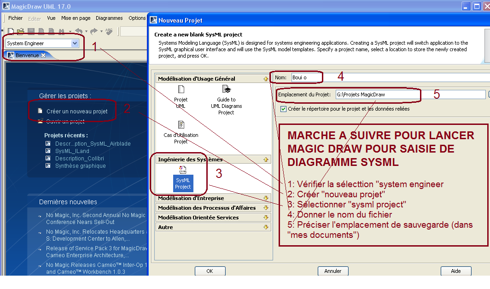
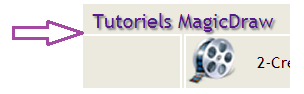
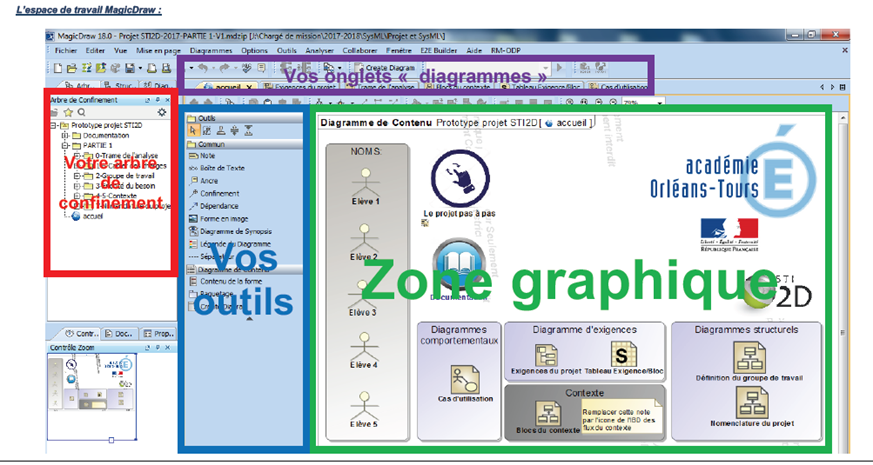

RESSOURCES Magic draw
Lancer le logiciel "MAGIC DRAW"
Configurer le logiciel pour une saisie de diagrammes sysml:

Magic Draw va vous permettrte de dessiner (entre autre) des diagrammes sysml; le lien suivant va vous permettre accéder à un site avec des tutoriels vidéo :
Lien vers site avec petits tutoriels vidéo (cliquer ici, PUIS: rubrique "tutoriels magic draw"

LES ZONES ECRAN:

Lien vers document PDF (cliquer)
Created with the Personal Edition of HelpNDoc: Create HTML Help, DOC, PDF and print manuals from 1 single source